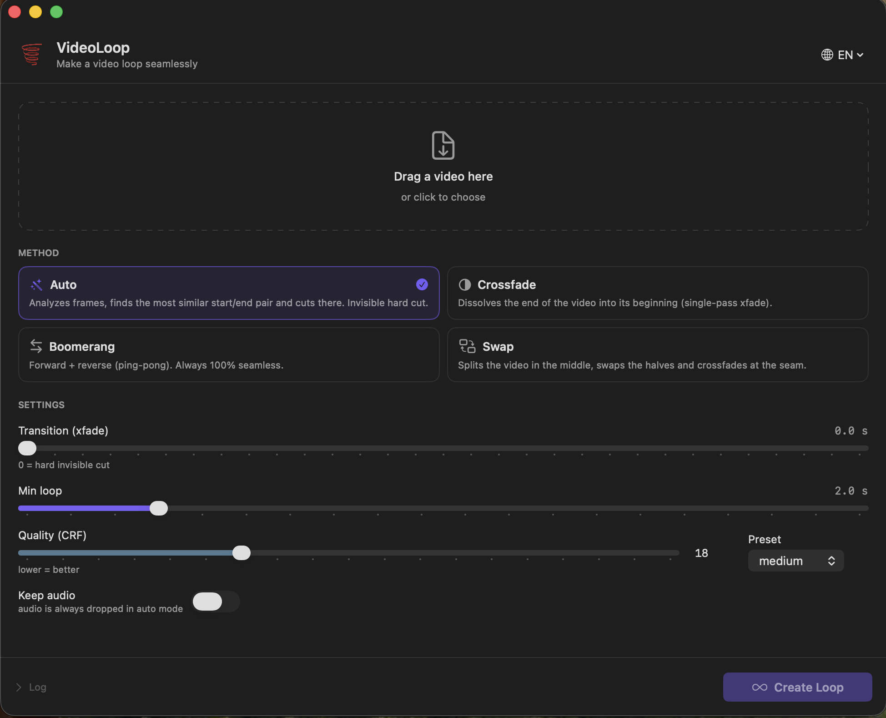

Bir videoyu kusursuz bir döngüye çeviren native macOS uygulaması.
videoloop.py aracının SwiftUI arayüzlü hâli; arka planda
ffmpeg / ffprobe çalıştırır. Sürükle-bırak, dört farklı
döngü modu ve sonucu anında önizleme.

Kısa bir videoyu, başı ve sonu göze çarpmadan birbirine bağlanan sonsuz bir döngüye dönüştürür — arka plan videoları, GIF benzeri kayıtlar veya sosyal medya döngüleri için. Hangi yöntemin en iyi sonucu vereceğini seçmeniz için dört farklı mod sunar.
| Mod | Açıklama |
|---|---|
| Auto | Kareleri analiz eder (32×18 gri tonlama), en benzer başlangıç/bitiş çiftini bulup orada keser. Görünmez sert kesim. |
| Crossfade | Videonun sonunu başına çözerek geçirir (tek geçişli xfade + acrossfade). |
| Boomerang | İleri + geri (ping-pong). Her zaman %100 kusursuz. |
| Swap | Videoyu ortadan ikiye böler, yarıları yer değiştirir ve ek yerinde crossfade yapar. |
brew install --cask neias/tap/videoloopTap'ı ilk kez kullanıyorsanız Homebrew güvenmenizi isteyebilir:
brew tap neias/tap
brew trust neias/tap
brew install --cask videoloop
ffmpeg bağımlılığı otomatik kurulur. Uygulama ad-hoc imzalı
(notarize değil), bu yüzden cask kurulumdan sonra karantina bayrağını kaldırır.
Kaldırmak için: brew uninstall --cask videoloop
Homebrew kurulumu için ek gereksinim yok — ffmpeg bağımlılık olarak gelir.
brew install ffmpeg'e düşer.
SwiftUI ile yazılmış. .app üretmek için:
./fetch-ffmpeg.sh # statik ffmpeg/ffprobe indir + universal yap (bir kez, opsiyonel)
./build.sh # VideoLoop.app üret (vendor/ varsa ikilileri gömer)
open VideoLoop.appSistemin/Homebrew'in ffmpeg'ine dayanan ince bir uygulama için:
EMBED_FFMPEG=0 ./build.shGeliştirme sırasında doğrudan da çalıştırabilirsiniz: swift run
vendor/ ikililerini lipo -thin arm64 ile
inceltip boyutu kabaca yarıya indirebilirsiniz.
| Dosya | Sorumluluk |
|---|---|
LoopMode.swift | Mod / seçenekler / VideoInfo modelleri |
FFmpegTools.swift | ffmpeg-ffprobe bulma, süreç çalıştırma, ilerleme ayrıştırma |
Looper.swift | probe, kare benzerliği analizi, dört mod üreticisi |
LoopEngine.swift | UI ↔ worker köprüsü (ObservableObject) |
ContentView.swift | SwiftUI arayüzü |
LoopPlayerView.swift | Sonucun döngülü AVKit önizlemesi |
VideoLoopApp.swift | Uygulama giriş noktası |